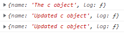

物件、函數與this
這堂課將介紹時常困擾初學 JavaScript 所遇到的一個名詞 - this
Global Object - Window 物件
首先，我們直接透過以下三個例子來印出 this，分別是全域環境、函式 a 函式陳述式 Function Statement和函式 b 函式表達式 Function Expression，在執行這三段程式碼時，會分別產生三個執行階段 Execution Context
1 | console.log(this); // Window |
會發現三者的結果都是全域環境中的 Global Object - Window，這也代表我們可以透過 Function Statement 和 Function Expression 來建立全域變數 (Global Variable)，而全域變數可以透過直接呼叫變數名稱來使用，不需要透過 . (dot-notation) 來指稱。
1 | function a() { |
this in object 物件中的 this
在 JavaScript 的物件中，如果值的型別是 Primitive Type (物件以外)，我們就稱為物件的屬性 (property);而如果是一個函式 (Funciton)，我們就會稱為物件的方法 (method)，以下透過物件的方法 (method) 來呼叫 this:
1 | var c = { |
會發現這次的 this 指向 c 這個 object 本身
JavaScripg 中 this 的問題
延續上方的範例，當我們在物件中的 method 再新增一個 setname 函式並呼叫 this 來更改物件的 property，且在這個函式的前後印出 this
1 | var c = { |
會發現即使 setname 函式前後的 this 都指向 c 這個物件本身

但 c 的 property 並沒有再次被改變，而是將 this.name 新增在全域物件 Window 上
這被許多人認為是 JavaScript 中的一個問題
解決 this 指向 Window
所以在一般開發時，為了解決這個 this 在物件中卻指向全域物件 Window 的問題，我們會透過一個變數先將 this 存起來，當內部函式要使用而沒有定義這個變數名稱時，就會透過 scoped chain 一層一層往外找這個變數名稱，就會找到前面預先存起來的 this
1 | var c = { |